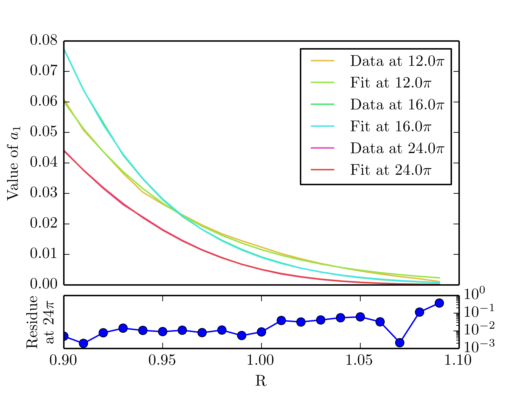
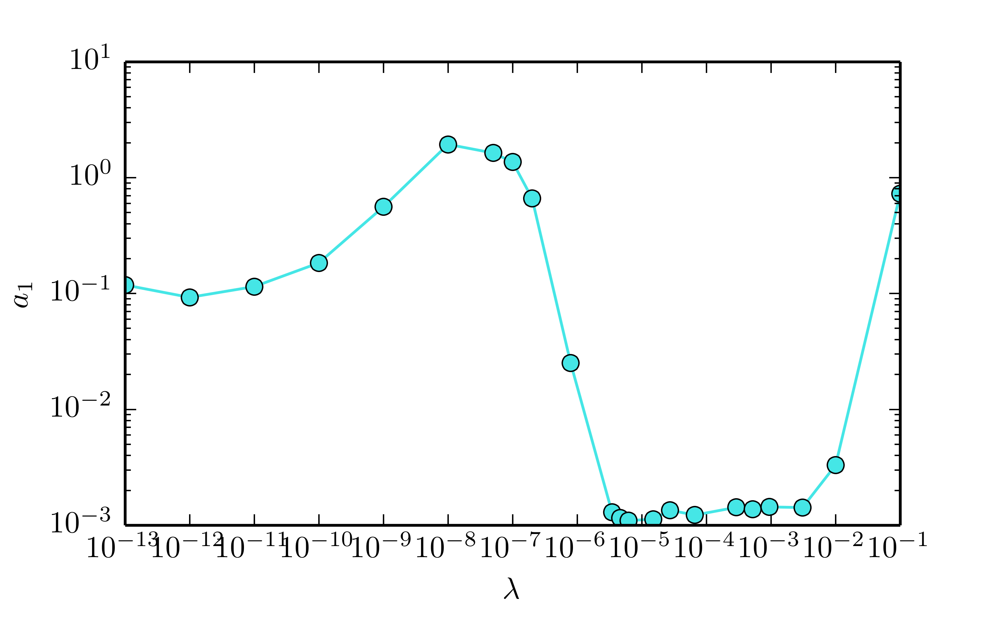
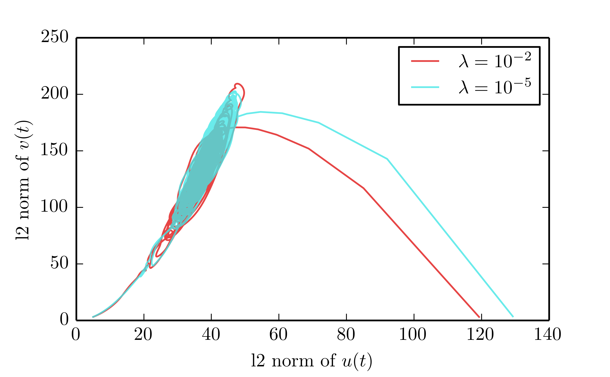
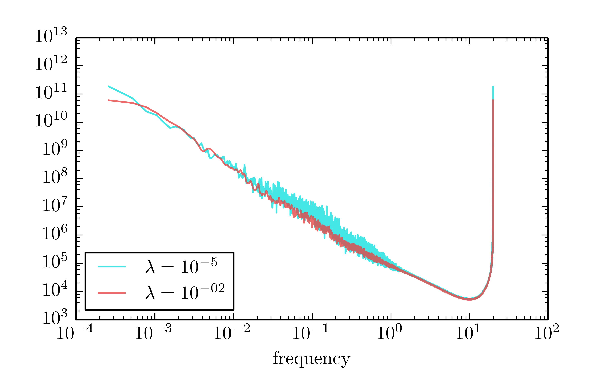
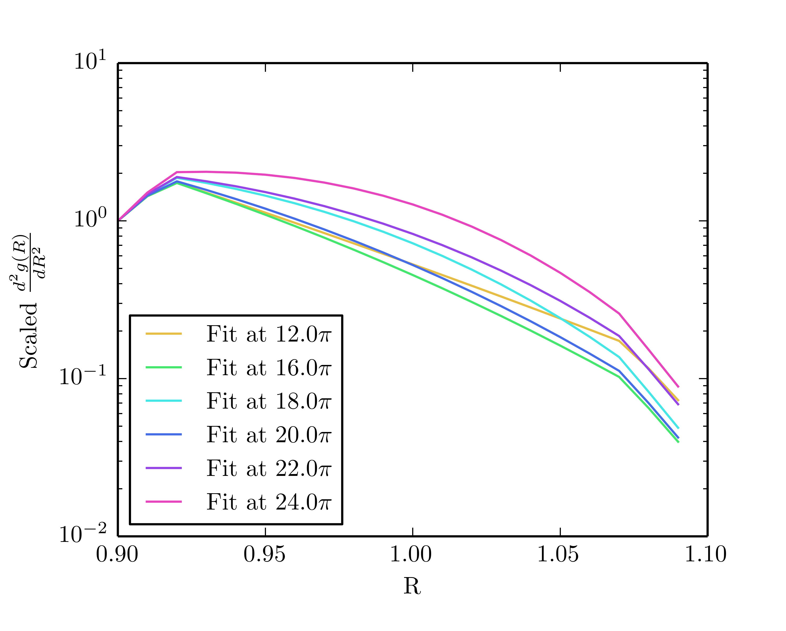

Low-dimensional modelling of turbulent drag-reduction
MPhys Presentation
Michał Kawalec
When I meet God, I am going to ask him two questions: Why relativity? And why turbulence? I really believe he will have an answer for the first
So, what is turbulence?

Why is the turbulence important?
Liquid transport is vital for existence of our civilisation. We want to transport as much fluid as possible, but turbulence is in a way:
- Increased drag & energy dissipation
- Higher pipe wear
- Increasing ship speed is problematic
What do we know about turbulence in a pipe?
- Laminar velocity profile is parabolic and stable
- It is possible to induce turbulence above Reynolds number, \(Re=ud/v\), around 2000
- The point at which turbulence is possible to be induced varies from experiment to experiment
- State-space dynamics is governed by a chaotic saddle
Chaotic saddle?
- Once turbulent, the chance of motion becoming laminar is constant in time
- For every Reynolds number the turbulence will eventually decay
- Not commonly observed in real life, as the decay times increase as \(b_0\exp(b_1\exp(b_2 R))\)
- Still, is an extremely sensitive test of any new model
Evidence of a chaotic saddle
- Survival probability follows exponential decay
- Coherent states exist
We want a simple, fast to compute model that would enable us to analyse the behaviour over many runs and domain sizes.
Problems with current models
- Simulate the whole fluid dynamics, thus require a tremendous amount of computational power
- Operate close to a Minimal Flow Unit
- Hard to isolate causes of observed motion
Our model of fluid turbulence
\[ \begin{split}\frac{\delta u}{\delta t} &= -\frac{\delta^4u}{\delta x^4} - 2\frac{\delta^2u}{\delta x^2} - (1 - \epsilon)u \\&~~~+u\frac{\delta u}{\delta x} + (1 - \epsilon)f(v)u \\ \frac{\delta v}{\delta t} &= D\frac{\delta^2 v}{\delta x^2} - v + Ru^2 \\ f(v) &= av + bv^2 \end{split} \]Is it a viable model?
A sample run
Survival probability
turquoise - data, red - fit to lowest 10%
It is a viable model (for pure fluids)!
We can run our model for different domain sizes and Reynolds numbers. Experiments predict that a double exponential fit to each domain size should be possible
Turbulent drag reduction
Addition of small particles lowers drag during turbulence substantially. Polymers are most potent in this effect, even concentrations as low as 1ppm cause noticeable drag reduction.
Accommodating for polymers
\[ \begin{split} \frac{\delta u}{\delta t} &= -\frac{\delta^4u}{\delta x^4} - 2\frac{\delta^2u}{\delta x^2} - (1 - \epsilon)u + u\frac{\delta u}{\delta x} \\&~~~+ (1 - \epsilon)f(v)u + \frac{\delta \tau}{\delta x}\\ \frac{\delta v}{\delta t} &= D\frac{\delta^2 v}{\delta x^2} - v + Ru^2 \\ \frac{\delta u}{\delta x} &= \tau + \lambda(\frac{\delta \tau}{\delta t} + u\frac{\delta \tau}{\delta x} - 2\tau\frac{\delta u}{\delta x}) \end{split} \]Fits to \(a_0\exp(a_1t)\) at different elasticities
Phase space evolution at different elasticities
Power plot at different elasticities
Program code highlights
- Base written in modern C++, with preprocessing in Python
- IPC achieved with the help of MPI
- Exhibits perfect scaling up to 40 000 cores on ARCHER
- Modular structure enables additional plug-ins to be included after the program is compiled
- Code includes functionality not used in this thesis
Thank you!
Projects essential to success of this thesis


Second derivative of the fits at different domains
